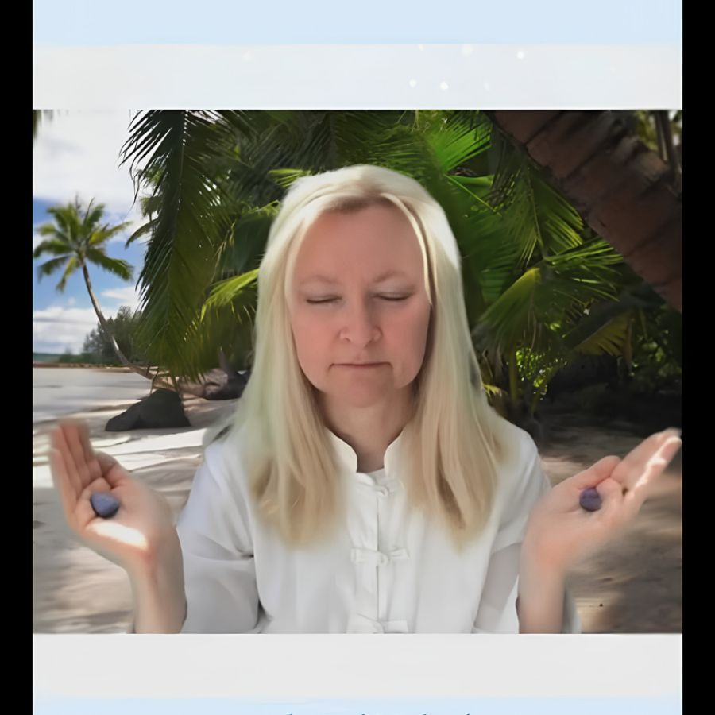

Gallery
Reiki Master Teacher, Registered Nurse, and Intuitive Mystic Healer — founder of Mystic Medicine Boutique.
Dorian Lynn — Reiki Master Teacher & Founder, Mystic Medicine Boutique
Dorian Lynn — Intuitive Mystic Healer
Dorian Lynn — RN, Reiki Master Teacher
Dorian Lynn — Spiritual Wellness Educator
Dorian Lynn — Live Teaching Session

Dorian Lynn — Energy Healing & Meditation